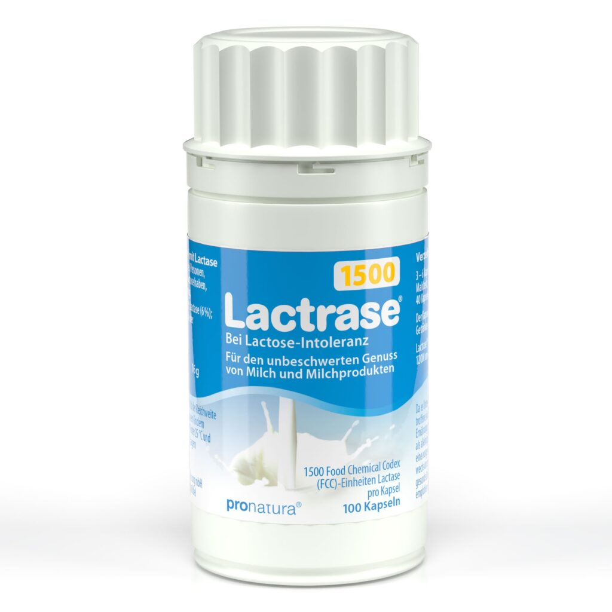
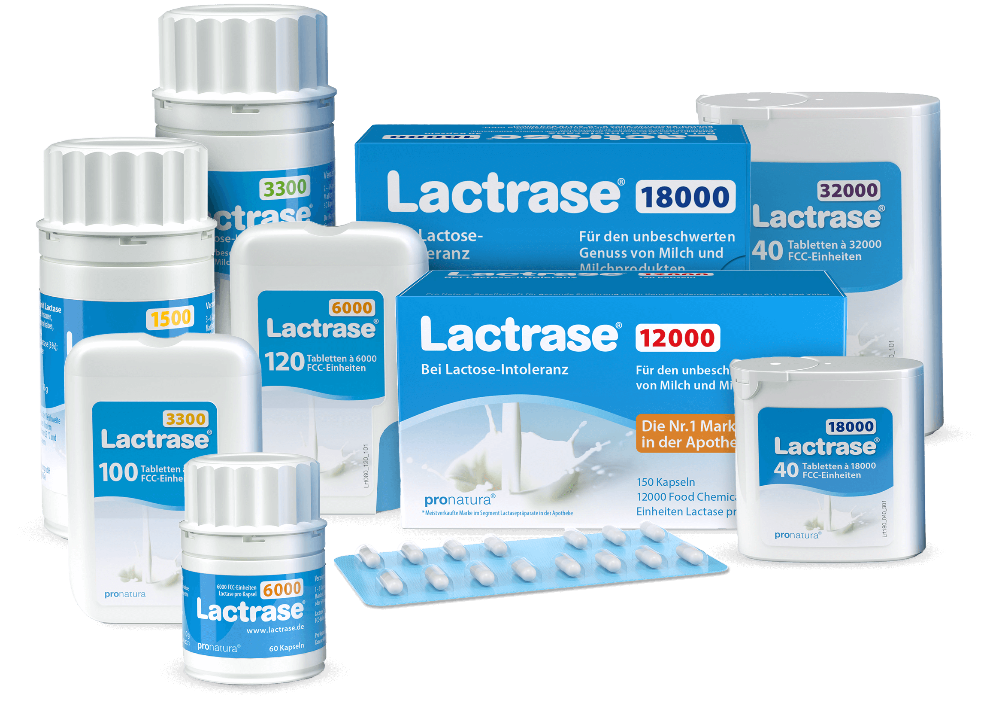

Lactrase®
Das millionenfach bewährte Mittel bei Laktoseunverträglichkeit – mit Sofort-Wirkung. Die enthaltene „saure“ Laktase spaltet den Milchzucker bereits im Magen und ermöglicht den vollen Genuss milchhaltiger Speisen und Getränke, zu Hause wie unterwegs. Vertrauen auch Sie der seit über 20 Jahren meistverkauften Laktasemarke in deutschen und österreichischen Apotheken.
- Spaltet Milchzucker in Glucose und Galactose
- „Saure“ Laktase – aktiv bereits im Magen
- Seit über 23 Jahren die Nr. 1 in der Apotheke*
- Erhältlich von 3.300 bis 18.000 FCC
Warum Lactrase® hilft
Bei einer Laktoseintoleranz bildet der Körper zu wenig Laktase – das Enzym, das den Milchzucker (Laktose) in seine verwertbaren Bestandteile Glucose und Galactose zerlegt. Unverdaute Laktose gelangt in den Dickdarm und verursacht dort typische Beschwerden wie Blähungen, Bauchschmerzen oder Durchfall.
Lactrase® liefert hochaktive „saure“ Laktase, die bereits im sauren Milieu des Magens arbeitet. So wird die Laktose schon vor dem Eintritt in den Darm gespalten – und Milch, Käse, Joghurt oder Sahne werden wieder verträglich.
Eine Stärke für jede Sensibilität
Lactrase® gibt es mit unterschiedlichen Aktivitäten – das weltweit größte Sortiment bei Laktasemangel. So finden Sie genau die Dosierung, die zu Ihnen und Ihrer Mahlzeit passt.

Milchprodukte unbeschwert genießen
Ob Milchkaffee am Morgen, Käse zum Abendbrot oder ein Eis unterwegs – mit Lactrase® müssen Sie auf nichts mehr verzichten. Die Einnahme ist unkompliziert und wirkt sofort, sodass Sie spontan und flexibel bleiben.
Beratung anfragenSo einfach ist die Einnahme
Stärke wählen
Die passende FCC-Stärke richtet sich nach dem Laktosegehalt der Mahlzeit. Als Orientierung empfiehlt die EFSA mindestens 4.500 FCC pro laktosehaltiger Mahlzeit.
Zur Mahlzeit einnehmen
Kapsel oder Tablette unzerkaut zu Beginn der laktosehaltigen Mahlzeit mit etwas Flüssigkeit einnehmen.
Unbeschwert genießen
Die Laktase spaltet den Milchzucker – Milchprodukte werden wieder gut vertragen.